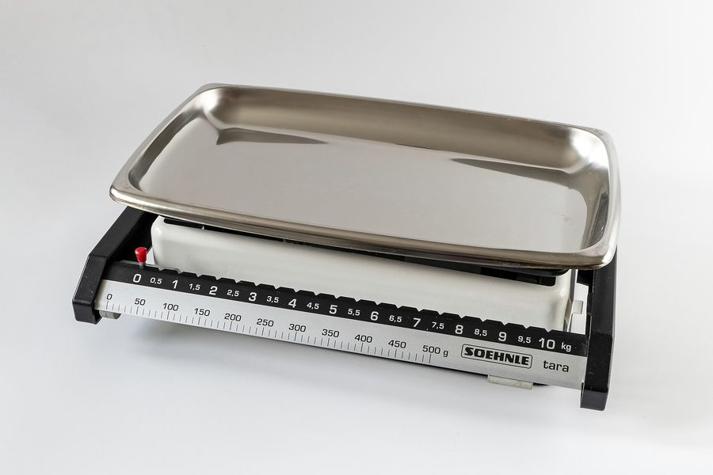

栄養成分表示は五つが義務で、並ぶ順番も決まっている
加工食品の裏に必ずある小さな表には、書く項目も順番も決まりがあります。さらに、表示された値にどれだけの幅が許されているかまで、府令の別表が定めています。
もとになった資料
- 資料
- 食品表示基準（平成二十七年内閣府令第十号）第三条第一項、別表第九、別記様式二
- 写した日
- 立場
- 体づくり・美容の資格も実務経験もない書き手が、原文を写しています
06 / 08 食べものの制度

写真：Soehnle weighing scale up to 10 kg with a detachable tray 2.jpg ／ W.carter ／ CC BY 4.0 （Wikimedia Commons）
{kind=link}
加工食品の容器には、小さな表が刷られています。熱量から始まって、いくつかの成分名と数字が縦に並んだ表です。
この表の作り方は、食品表示基準という内閣府令が決めています。項目も、順番も、数字の幅も、すべて条文と別表に書かれています。
五つの項目と、その順番
府令の第三条は、表示すべき栄養成分を「たんぱく質、脂質、炭水化物及びナトリウム（食塩相当量に換算したもの）」の量および熱量としています。
これに熱量を加えて、義務のある項目は五つになります。熱量、たんぱく質、脂質、炭水化物、食塩相当量の五つです。
並べ方は、別記様式二という決められた書式で示されています。府令の本則にも、この五つの表示は別記様式二により行う、と書かれています。
五つ以外の成分も一緒に表示する場合は、別記様式三を使うことになっています。飽和脂肪酸や食物繊維が加わった表は、こちらです。
数字が何あたりの量なのかも、決めることになっています。百グラムか、百ミリリットルか、一食分か、一包装か、その他の一単位かです。
一食分を選んだ場合は、その一食分の量を併記しなければなりません。表の見出しに「一食分（◯グラム）当たり」とあるのは、この定めによるものです。
文字の大きさにも決まりがあります。容器包装への表示は、日本産業規格の八ポイントの活字以上の大きさとしなければならないとされています。
ただし表示可能面積がおおむね百五十平方センチメートル以下のものは、五・五ポイント以上でよいとされています。小さな袋の表が細かいのは、このためです。
食塩相当量は計算して出している
五つのうち食塩相当量だけは、性格が違います。測っているのはナトリウムの量で、それを決まった数で掛けて食塩の量に直しています。
掛ける数は府令に書かれています。「ナトリウムの量に二・五四を乗じたもの」が食塩相当量です。
この二・五四という数は、食塩の分子の重さをナトリウムの重さで割った比から来ています。府令はその比を、そのまま条文に書き込んでいます。
単位も定まっています。別表第九が成分ごとに単位を決めていて、食塩相当量についてはグラムと明記されています。
ナトリウム塩を添加していない食品にかぎっては、食塩相当量に加えてナトリウムの量を併記できます。これは条件つきの例外です。
表示された値には幅がある
表に刷られている数字は、その袋を実際に測った値とはかぎりません。府令は、表示値に対して許される幅をあらかじめ決めています。
別表第九の第四欄が、その許容差の範囲です。たんぱく質と脂質は、いずれもプラスマイナス二十パーセントとされています。
ただし量が少ないときは別の扱いになります。百グラム当たりの量が二・五グラム未満の場合は、プラスマイナス〇・五グラムが許容差になります。
飽和脂肪酸も同じくプラスマイナス二十パーセントで、〇・五グラム未満の場合はプラスマイナス〇・一グラムとされています。
ゼロと書ける量も決まっています。第五欄に掲げる量に満たない場合は〇と表示できるとされ、たんぱく質と脂質では〇・五グラムです。
そもそも表が付かない食品もあります。府令の第三条第三項は、栄養成分の量および熱量の表示を省略できる場合を五つ挙げています。
一つ目は、容器包装の表示可能面積がおおむね三十平方センチメートル以下であるものです。小さな個包装に表がないのは、これによります。
二つ目が酒類、三つ目が栄養の供給源としての寄与の程度が小さいもの、四つ目が極めて短い期間で原材料が変更されるものです。
五つ目は、消費税法第九条第一項で消費税を納める義務が免除される事業者が販売するものです。規模の小さい作り手に配慮した定めになっています。
ただし、これらにあたる場合でも、栄養表示をしようとするときは省略できません。特定保健用食品と機能性表示食品も、省略の対象から外れています。
つまり表の数字は、一袋ごとの実測値ではなく、決められた幅の中にある代表値です。そう読むほうが、実際の作りに近いことになります。
それでも表は役に立ちます。同じ条件で作られた表どうしを並べれば、どちらが多いかという比べ方はできます。
気をつけたいのは、単位のそろえ方です。百グラム当たりと一食分当たりの表をそのまま見比べると、数字の大小が逆に見えることがあります。
食品表示基準 別記様式二・別表第九